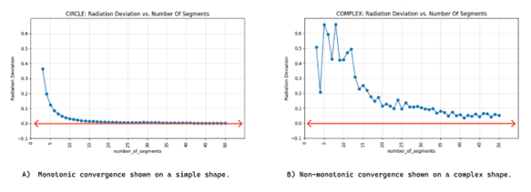
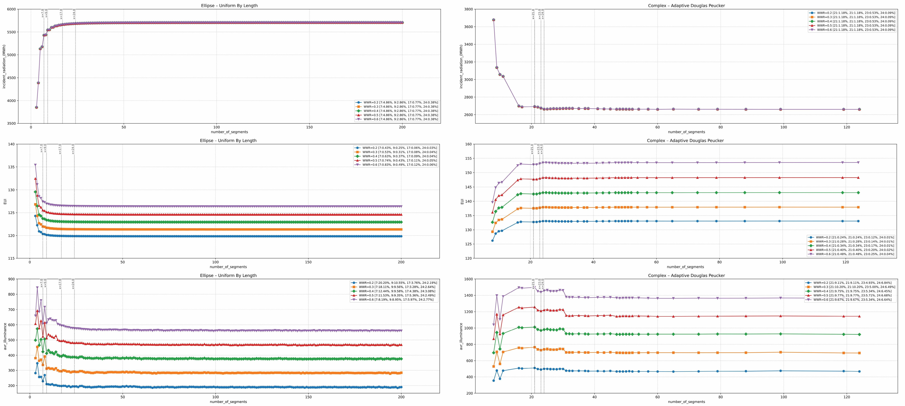
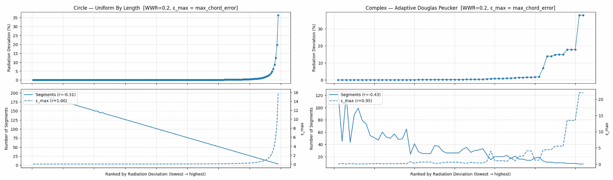

Overview
CurvAdapt bridges the gap between free-form NURBS design models and
planar simulation requirements, providing robust segmentation and
simplification workflows.
The core idea: control geometric fidelity directly using maximum
chord error (MCE) and its normalized form rMCE, instead of guessing via
“number of segments.” This yields stable, monotonic convergence and
reproducible results across daylight and energy simulations.
Building Performance Simulation
Geometry Preparation
Plugin Development
Curve Segmentation
Polyline Simplification
Problem Statement
Most pipelines discretize curved profiles by segment count. That’s scale-dependent,
hides geometric deviation, and creates false confidence when results look converged
but geometry isn’t. CurvAdapt makes fidelity explicit and reportable so simulations
are physically meaningful, not just numerically cozy.
Key Capabilities
Segmentation
Adaptive NURBS-to-polyline conversion driven by chord-error, curvature, or tangent-angle criteria.
Simplification
Post-process polyline reduction with geometric-fidelity control to minimize deviation while retaining form.
Critical-Point Preservation
Safeguards kinks, corners, and sub-curve seams (G⁰/G¹ continuity) to prevent topology distortion.
Simulation-Ready Geometry
Generates lightweight yet accurate geometry optimized for daylight and energy simulations.
Method at a Glance
CurvAdapt quantifies fidelity with MCE/rMCE, validates a geometry-sensitive
proxy (incident radiation), and uses guard-banded monotonicity checks to
confirm stable convergence before trusting results.
- Uniform by length/parameter for smooth primitives.
- Adaptive by curvature/tangent/chord for complex forms.
- Critical-points detector across all paths.

Workflow overview: segmentation families, proxy validation, and convergence checks.
Non-Monotonic Convergence
Increasing model detail doesn’t always improve accuracy — CurvAdapt ensures
stability through geometric guarantees before simulation.

Non-monotonic convergence for (A) simple and (B) complex geometries.
Proxy Validation
Incident radiation deviation tracks geometric fidelity and reliably predicts
when daylight and energy metrics stop changing. That means you can detect
“good enough” geometry at ~1/20th the cost of full simulations.

Validated on an ellipse (uniform-by-length) and a hybrid polycurve (adaptive-by-chord).
Implemented Algorithms
Segmentation
- Curvature-based and tangent-angle-based adaptive splitting.
- Recursive Douglas–Peucker with kink preservation.
- Hybrid segmentation for mixed geometric conditions.
Simplification
- Douglas–Peucker and Visvalingam–Whyatt algorithms.
- Angle-based filtering for visual coherence.
- Iterative refinement until target tolerance (MCE) is met.
Metrics
- Geometric fidelity quantified via chord error and relative MCE (rMCE).
- Performance evaluated through energy deviation and runtime reduction.
- Ensures stable simulation behavior across varied curve complexities.
Fidelity Boundaries: Use MCE/rMCE
Segment count is a noisy proxy. MCE correlates strongly with radiation deviation
(r ≥ 0.9 across shapes/strategies), giving smooth, monotonic refinement even
when segment-based curves oscillate.

Radiation deviation decays with MCE; segment count overstates improvement.
Recommended Fidelity Thresholds
Guidance
- 5% radiation deviation — early concept studies.
- 3–0.86% — balanced accuracy for most daylight/energy runs.
- 0.4% — high-accuracy cases; near-zero EUI error relative to a 200-segment baseline.
Rules of Thumb
- Simple curves (circle/ellipse): Uniform-by-Length is efficient.
- Free-form/hybrid: Adaptive-by-Chord with critical-points detector.
- Report algorithm + tolerance (MCE/rMCE) with results, not just “segments.”
Research Team

Hossein Nazari
Lead Developer
Dr. Mehdi Ghiai
Supervisor

Dr. Abbas Tarkashvand
Supervisor